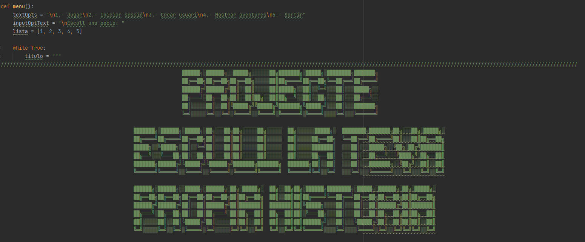

Choose your Story
Que es Choose your Story?
Choose your Story consiste en un juego de eleccion dende podemos elegir distintas historias donde protagonizara un personaje al que devera de ir eligiendo distintas opciones para poder continuar, este es un juego de historia lineal, al que cuando acava la aventura puede acavar de una forma o de otra.
Como se juega?
La mecanica de Choose your Story consiste en un juego de eleccion lineal,
donde para poder avanzar con la historia del protagonista, deveremos de
elegir distintas opciones. Las opciones que elegimos van variando segun avanza
la historia.
Lo primero que deveremos de hacer sera crear una cuenta que
nos permitirael acceso al juego total, despues tendremos un menu donde podremos
elegir entre jugar, elejir historia o ver el progreso, entre otras opciones.
Donde conseguirlo?
Choose your story solo esta disponible para la plataforma en ordenador. Este juego se puede conseguir desde la pagina del proyecto GIT en github. para poder acceder se deve hacer un clic en el enlace de aqui